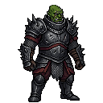

HISTÓRICO V1 REJEITADO PELO CRIADOR. Preservado para comparação. Ver revisão candidata v2
Orc V1 · primeiras armas
Verde Warcraft selecionado pelo criador como primeiro jogável para futura integração. Armas de uma mão e estudos de golpe/caminhada na vista três quartos.
Biblioteca de Arte · Infante original preservado · Arquivos e documentação
Orc V1 · conceito

Seleção preservada
Espada e machado são assets independentes.
A caminhada armada foi solicitada pelo criador.
Armadura e identidade seguem o Orc selecionado.
Mestre do conceito · Mestre do Idle
Espada do Recruta
Arma separada · uma mão
Uma mão; lâmina reta de dois gumes com canal central, guarda reta simples, couro castanho costurado, pomo disco. Aço gasto e funcional, sem magia ou ornamentos de alto nível.
PNG · Aseprite
Machado de Milícia
Arma separada · uma mão
Uma mão; cabeça simples de ferro de um gume, fio curvo e barba curta, olhal/rebite visível; cabo de madeira curvo com veios e desgaste. Sem crânios, gemas ou adereços mágicos.
PNG · Aseprite
Prévia local: corpo, arma e dedos têm camadas registradas nos mestres e nos PNGs. O golpe se repete nesta página para revisão; sua ação não é um loop automático no jogo. A integração Unity e as demais vistas ainda são etapas posteriores.